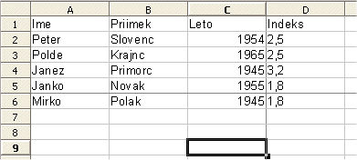
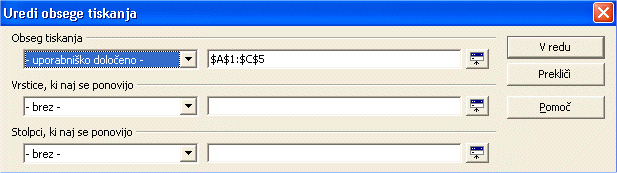
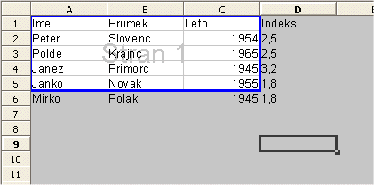

dostavlja projekt slovenjenja OpenOffice.org, Lugos in Agenda
OpenOffice.org ponuja mo¾nost tiskanja doloèenega bloka celic preglednice. Kako to izgleda si lahko pogledamo na primeru:

V predogledu tiskanja (Datoteka - Predogled tiskanja) lahko vidimo,
da bo na papir res natisnjena le vsebina celic znotraj doloèenega bloka
tiskanja..

Obseg tiskanja je izpisan v prvi koloni pod imenom 'uporabni¹ko doloèeno'.
Veèji del nastavitev tiskanja za list je dosegljivih preko menijskega ukaza Oblika-Stran v zavihku List.
POdatki na oknu so toliko razvidni, da ni potrebne posebne razlge, razen pri izbiri Merilo, ki je nekoliko nenavadno:
To pogovorno okno lahko odpremo tudi s klikom na ikono za Predogled tiskanja ,
ki jo najdemo v Predmetni vrstici.
,
ki jo najdemo v Predmetni vrstici.
Nasvet kako lahko hitreje tiskamo iz doloèenih strani peglednice ali celo celotne datoteke:
Pozor: Èe hoèemo vstaviti isto stvar na veè listov, jih izberemo, kot smo malo prej. NAto na prvem listu vnesimo podatek v doloèeno celico. No, vne¹eni podatki so vidni na vseh izbranih listih.
Ostale nastavitve tiskanja lahko nastavljamo, èe izberemo Datoteka-Natisni.... Èe kliknemo na gumb 'Mo¾nosti' se znajdemo pred pogovornim oknom, ki krmili vklop izogibanja praznim listom in mo¾nost tiskanja samo doloèenih strani.
Za ogled strani kot bo opremljena s prelomi strani pred tiskanjem:

Izbor tiskanja je oznaèen z modrim robom.
Autor: Sophie Gautier
Zahvala: Richard Holt, proofreader and OOo contributor
Integracija: Gianluca Turconi
Prevedel: Roman Bobnariè
Zadnjiè spremenjeno: 24.2.2002
Prevedeno: 27.10.2002
Stiki: OpenOffice.org Documentation Project http://whiteboard.openoffice.org/doc/ in www.agenda.si